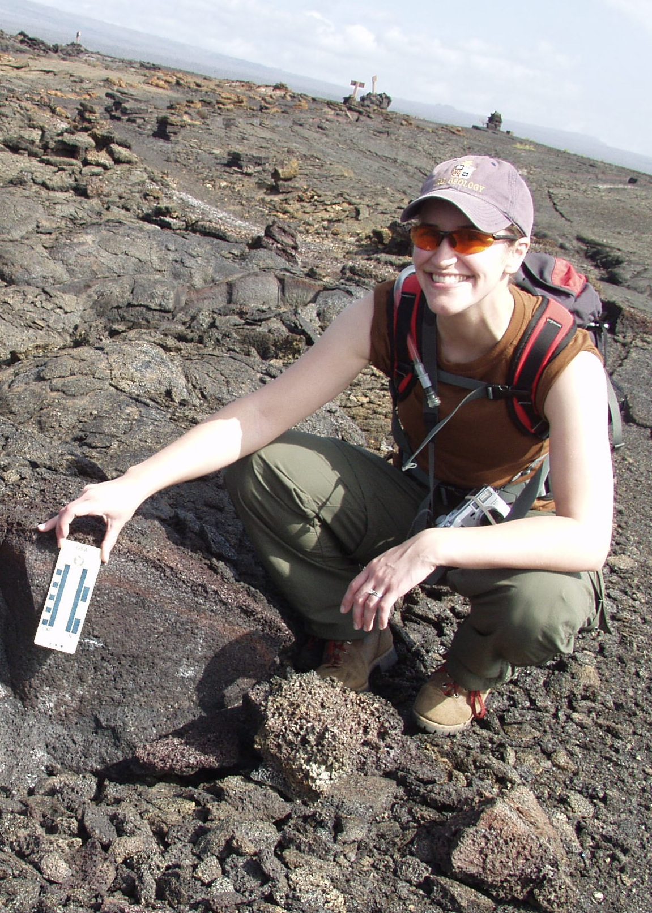

LGC 2010: Conference Organizers
The Organizing Committee is comprised of grad students and postdocs from a variety of institutions and areas of research.
Email the conference organizers.
| Andrew Poppe | |
| Adrienne Dove | |
| Catherine Neish | |
| Amy Fagan |
-
Andrew Poppe, Univ. of Colorado at Boulder
Back to top
Andrew is a fourth-year graduate student at the Laboratory for Atmospheric and Space Physics and the Department of Physics at the University of Colorado at Boulder. His research focuses on dusty space plasma physics throughout the solar system. His current projects include the Student Dust Counter on the New Horizons mission and simulations of the lunar photoelectron sheath as part of the Colorado Center for Lunar Dust and Atmospheric Studies.
-
Adrienne Dove, Univ. of Colorado at Boulder
Back to top
Adrienne Dove is a fourth-year graduate student in Astrophysical and Planetary Sciences at the University of Colorado (also affiliated with LASP and CCLDAS. She has been involved in research in collaboration with Ball Aerospace to evaluate the effects of surface treatments on dust adhesion by using a centrifuge technique to measure adhesion forces in vacuum. She is currently investigating the generation of photoelectron sheaths in vacuum and the impact of UV illumination of the motion of lunar dust.
-
Catherine Neish, Johns Hopkins University / Applied Physics Laboratory
Back to topCatherine Neish is a first-year postdoc at the Johns Hopkins University Applied Physics Laboratory, working with Ben Bussey on Mini-RF data returned from the Chandrayaan-1 and LRO spacecraft. Her research interests focus on radar observations of planetary objects. Radar yields a wealth of information about the surface being imaged, including topography, composition, and roughness. In particular, the unusual radar properties of ice may lead to its detection in the permanently shadowed regions at the poles of the Moon, which has implications for future manned exploration of that body.
-
Amy Fagan, Univ. of Notre Dame
Back to topAmy is a fourth year graduate student in planetary geosciences at the University of Notre Dame under the direction of Dr. Clive Neal. Her eclectic research includes impact craters and putative subglacial volcanoes near the north pole of Mars as well as lunar impact melts (Apollo 12, 14, and 16). She is currently working on distinguishing between pristine mare basalts and impact melts using both textural and geochemical analyses.